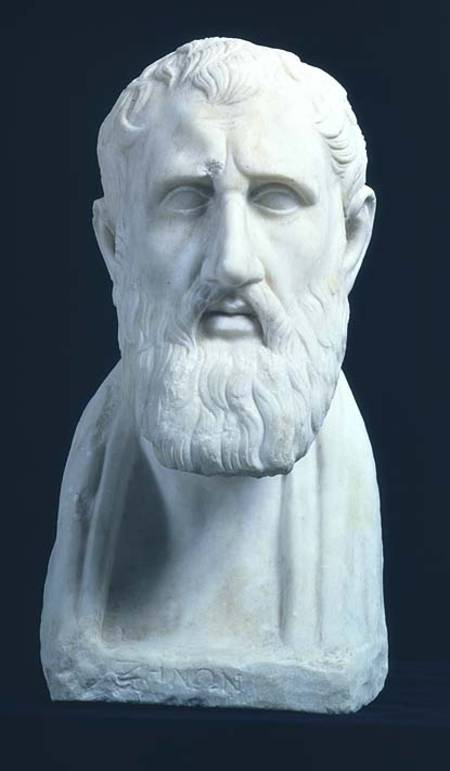

Hi! This is Alan, currently a sophomore at Canyon Crest Academy. Right now, he is taking AP Chem, AP Calc BC, AP CSP, and Intro to engineering. So far, these classes are not too difficult yet, with relatively manageable workloads. He is also on the school swim team. What are AP classes?
Not only does he swim, I also occasionally play badminton. He also wishes to learn how to play tennis. He also enjoys playing musical instruments. He mainly plays piano, but he is also learning how to sing. He has been playing piano for 7 years, singing for 1 year, and have swum for 3 years. All about swimming

Compared to many of my friends, he tends to procrastinate less and have better time management. However, his friends tend to be more serious about learning stuff and when they do dedicate time, they dedicate a lot of effort as well. Similar to many of his friends, he enjoys exercising and improving my body’s potential, not only for fun, but also for sport. Another problem he comes across often is how he can be easily scared by the amount of work, such as how having 6 or 7 AP classes a year sounds frightening, but in reality is pretty doable. And that ties into another problem his friends are better at: how difficult things don’t affect them psychologically as much. Overall, a great way to deal with this is with a stoic vision. What is Stoicism?